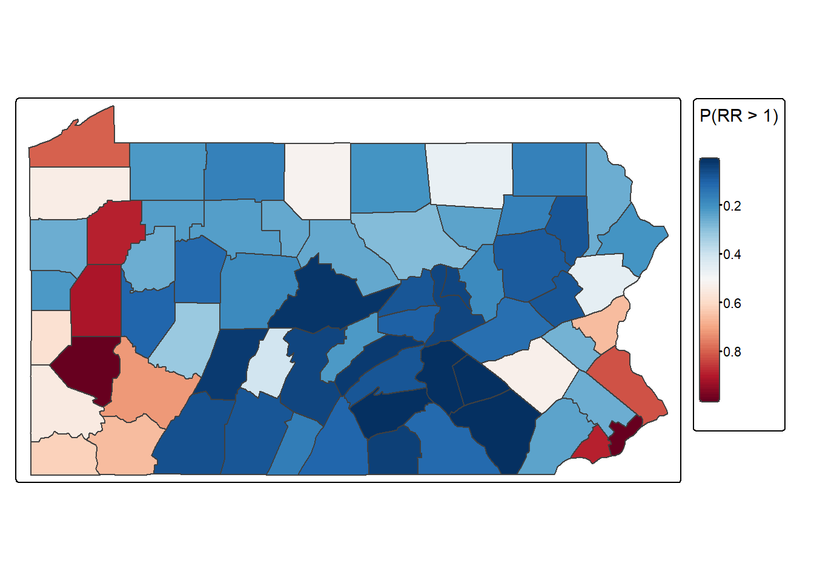

library(tidyverse)
library(tidymodels)
library(sf)
library(spdep)
library(terra)
library(tmap)
theme_set(theme_bw())
load("data/pennLC.rda")
load("data/pennLC_sf.rda")
class(pennLC)[1] "list"glimpse(pennLC)List of 4
$ geo :'data.frame': 67 obs. of 3 variables:
..$ county: Factor w/ 67 levels "adams","allegheny",..: 1 2 3 4 5 6 7 8 9 10 ...
..$ x : num [1:67] -77.2 -80 -79.5 -80.3 -78.5 ...
..$ y : num [1:67] 39.9 40.5 40.8 40.7 40 ...
$ data :'data.frame': 1072 obs. of 6 variables:
..$ county : Factor w/ 67 levels "adams","allegheny",..: 1 1 1 1 1 1 1 1 1 1 ...
..$ cases : int [1:1072] 0 0 1 0 0 5 5 18 0 0 ...
..$ population: int [1:1072] 1492 365 68 73 23351 12136 3609 5411 1697 387 ...
..$ race : Factor w/ 2 levels "o","w": 1 1 1 1 2 2 2 2 1 1 ...
..$ gender : Factor w/ 2 levels "f","m": 1 1 1 1 1 1 1 1 2 2 ...
..$ age : Factor w/ 4 levels "40.59","60.69",..: 4 1 2 3 4 1 2 3 4 1 ...
$ smoking :'data.frame': 67 obs. of 2 variables:
..$ county : Factor w/ 67 levels "adams","allegheny",..: 1 2 3 4 5 6 7 8 9 10 ...
..$ smoking: num [1:67] 0.234 0.245 0.25 0.276 0.228 0.249 0.228 0.27 0.211 0.276 ...
$ spatial.polygon:Formal class 'SpatialPolygons' [package "sp"] with 4 slots
.. ..@ polygons :List of 67
.. ..@ plotOrder : int [1:67] 41 8 59 14 17 53 56 20 65 42 ...
.. ..@ bbox : num [1:2, 1:2] -80.5 39.7 -74.7 42.3
.. .. ..- attr(*, "dimnames")=List of 2
.. ..@ proj4string:Formal class 'CRS' [package "sp"] with 1 slotgeo <- pennLC$geo
data <- pennLC$data
smoking <- pennLC$smoking
spatial_polygon <- pennLC$spatial.polygon
class(geo)[1] "data.frame"class(spatial_polygon)[1] "SpatialPolygons"
attr(,"package")
[1] "sp"glimpse(data)Rows: 1,072
Columns: 6
$ county <fct> adams, adams, adams, adams, adams, adams, adams, adams, ada…
$ cases <int> 0, 0, 1, 0, 0, 5, 5, 18, 0, 0, 0, 1, 0, 4, 9, 12, 0, 20, 13…
$ population <int> 1492, 365, 68, 73, 23351, 12136, 3609, 5411, 1697, 387, 69,…
$ race <fct> o, o, o, o, w, w, w, w, o, o, o, o, w, w, w, w, o, o, o, o,…
$ gender <fct> f, f, f, f, f, f, f, f, m, m, m, m, m, m, m, m, f, f, f, f,…
$ age <fct> Under.40, 40.59, 60.69, 70+, Under.40, 40.59, 60.69, 70+, U…d <- data |>
group_by(county) |>
summarise(observed_cases = sum(cases))
library(SpatialEpi)
data_ordered <- data |>
arrange(county, race, gender, age)
head(data_ordered)| county | cases | population | race | gender | age |
|---|---|---|---|---|---|
| adams | 0 | 365 | o | f | 40.59 |
| adams | 1 | 68 | o | f | 60.69 |
| adams | 0 | 73 | o | f | 70+ |
| adams | 0 | 1492 | o | f | Under.40 |
| adams | 0 | 387 | o | m | 40.59 |
| adams | 0 | 69 | o | m | 60.69 |
d <- d |>
mutate(
expected_cases = expected(
population = data_ordered$population,
cases = data_ordered$cases,
n.strata = 16
)
)
d <- d |>
left_join(smoking, by = "county")
head(d)| county | observed_cases | expected_cases | smoking |
|---|---|---|---|
| adams | 55 | 69.62730 | 0.234 |
| allegheny | 1275 | 1182.42804 | 0.245 |
| armstrong | 49 | 67.61012 | 0.250 |
| beaver | 172 | 172.55806 | 0.276 |
| bedford | 37 | 44.19013 | 0.228 |
| berks | 308 | 300.70598 | 0.249 |
d <- d |>
mutate(smr = observed_cases / expected_cases)
rownames(d) <- d$county
head(pennLC_sf)| county | cases | population | race | gender | age | smoking | geometry |
|---|---|---|---|---|---|---|---|
| adams | 0 | 1492 | o | f | Under.40 | 0.234 | POLYGON ((-77.4467 39.96954… |
| adams | 0 | 365 | o | f | 40.59 | 0.234 | POLYGON ((-77.4467 39.96954… |
| adams | 1 | 68 | o | f | 60.69 | 0.234 | POLYGON ((-77.4467 39.96954… |
| adams | 0 | 73 | o | f | 70+ | 0.234 | POLYGON ((-77.4467 39.96954… |
| adams | 0 | 23351 | w | f | Under.40 | 0.234 | POLYGON ((-77.4467 39.96954… |
| adams | 5 | 12136 | w | f | 40.59 | 0.234 | POLYGON ((-77.4467 39.96954… |
class(pennLC_sf)[1] "sf" "data.frame"map <- pennLC_sf |>
distinct(county, geometry)
ggplot(map) +
geom_sf()d <- d |>
left_join(map, by = "county")
map <- map |>
left_join(d, by = "county")
glimpse(d)Rows: 67
Columns: 6
$ county <chr> "adams", "allegheny", "armstrong", "beaver", "bedford",…
$ observed_cases <int> 55, 1275, 49, 172, 37, 308, 127, 59, 454, 158, 121, 8, …
$ expected_cases <dbl> 69.627305, 1182.428036, 67.610123, 172.558055, 44.19013…
$ smoking <dbl> 0.234, 0.245, 0.250, 0.276, 0.228, 0.249, 0.228, 0.270,…
$ smr <dbl> 0.7899200, 1.0782897, 0.7247435, 0.9967660, 0.8372910, …
$ geometry <POLYGON [°]> POLYGON ((-77.4467 39.96954..., POLYGON ((-80.1…tmap_mode("plot")
tm_shape(map) +
tm_polygons(
fill = "smr",
fill.scale = tm_scale_continuous(values = "viridis"),
# fill.legend = tm_legend(position = "right")
) +
tm_layout(legend.position = c("right", "center"), legend.outside = TRUE)ggplot(map) +
geom_sf(aes(fill = smr)) +
scale_fill_viridis_c()
penn_ordered <- pennLC_sf |>
st_drop_geometry() |>
arrange(county, race, gender, age)
E_all <- expected(
population = penn_ordered$population,
cases = penn_ordered$cases,
n.strata = 16
)
penn_processed_sf <- pennLC_sf |>
group_by(county) |>
summarise(
Y = sum(cases),
smoking = mean(smoking, na.rm = TRUE),
county_population = sum(population),
.groups = "drop"
) |>
mutate(E = E_all, smr = Y / E)
ggplot(penn_processed_sf) +
geom_sf(aes(fill = smr)) +
scale_fill_viridis_c()# Adjacency matrix -------------------------------------------------------
nb <- poly2nb(penn_processed_sf, queen = TRUE)
nb2INLA(file = "pa.adj.graph", nb)
penn_inla <- penn_processed_sf |>
st_drop_geometry() |>
mutate(
id = as.numeric(factor(county)),
re_u = 1:n(),
re_v = 1:n()
) |>
select(id, county, Y, E, smoking, re_u, re_v)
library(INLA)
formula <- Y ~ 1 + f(id, model = "bym", graph = "pa.adj.graph")
res <- inla(
formula,
family = "poisson",
data = penn_inla,
E = E,
control.predictor = list(compute = TRUE),
control.compute = list(dic = TRUE, waic = TRUE, cpo = TRUE)
)
summary(res)Time used:
Pre = 1.63, Running = 0.363, Post = 0.179, Total = 2.17
Fixed effects:
mean sd 0.025quant 0.5quant 0.975quant mode kld
(Intercept) -0.049 0.015 -0.079 -0.048 -0.019 -0.048 0
Random effects:
Name Model
id BYM model
Model hyperparameters:
mean sd 0.025quant 0.5quant
Precision for id (iid component) 1943.22 2500.16 77.03 1125.74
Precision for id (spatial component) 87.18 46.75 29.41 76.62
0.975quant mode
Precision for id (iid component) 8517.63 181.00
Precision for id (spatial component) 207.48 59.54
Deviance Information Criterion (DIC) ...............: 515.11
Deviance Information Criterion (DIC, saturated) ....: 104.92
Effective number of parameters .....................: 22.15
Watanabe-Akaike information criterion (WAIC) ...: 515.51
Effective number of parameters .................: 18.35
Marginal log-Likelihood: -254.70
CPO, PIT is computed
Posterior summaries for the linear predictor and the fitted values are computed
(Posterior marginals needs also 'control.compute=list(return.marginals.predictor=TRUE)')formula2 <- Y ~
smoking +
f(re_u, model = "besag", graph = "pa.adj.graph", scale.model = TRUE) +
f(re_v, model = "iid")
res2 <- inla(
formula2,
family = "poisson",
data = penn_inla,
E = E,
control.predictor = list(compute = TRUE),
control.compute = list(dic = TRUE, waic = TRUE, cpo = TRUE)
)
# Formula with BYM2
formula_bym2 <- Y ~
smoking +
f(
re_u,
model = "bym2",
graph = "pa.adj.graph",
scale.model = TRUE, # scale spatial effect
hyper = list(
# priors for hyperparameters
prec = list(prior = "pc.prec", param = c(1, 0.01)), # PC prior for precision
phi = list(prior = "pc", param = c(0.5, 2 / 3)) # PC prior for mixing
)
)
# Fit BYM2 model
res_bym2 <- inla(
formula_bym2,
family = "poisson",
data = penn_inla,
E = E,
control.predictor = list(compute = TRUE),
control.compute = list(
dic = TRUE,
waic = TRUE,
cpo = TRUE,
return.marginals.predictor = TRUE
)
)
summary(res2)Time used:
Pre = 0.993, Running = 0.345, Post = 0.201, Total = 1.54
Fixed effects:
mean sd 0.025quant 0.5quant 0.975quant mode kld
(Intercept) -0.324 0.150 -0.620 -0.323 -0.028 -0.323 0
smoking 1.155 0.623 -0.077 1.156 2.380 1.156 0
Random effects:
Name Model
re_u Besags ICAR model
re_v IID model
Model hyperparameters:
mean sd 0.025quant 0.5quant 0.975quant mode
Precision for re_u 228.30 121.78 76.43 201.12 540.59 156.64
Precision for re_v 21662.43 23917.79 1387.04 14128.36 85157.97 3753.72
Deviance Information Criterion (DIC) ...............: 515.16
Deviance Information Criterion (DIC, saturated) ....: 104.96
Effective number of parameters .....................: 19.21
Watanabe-Akaike information criterion (WAIC) ...: 515.98
Effective number of parameters .................: 16.54
Marginal log-Likelihood: -289.45
CPO, PIT is computed
Posterior summaries for the linear predictor and the fitted values are computed
(Posterior marginals needs also 'control.compute=list(return.marginals.predictor=TRUE)')summary(res_bym2)Time used:
Pre = 19.1, Running = 0.416, Post = 0.149, Total = 19.6
Fixed effects:
mean sd 0.025quant 0.5quant 0.975quant mode kld
(Intercept) -0.323 0.174 -0.667 -0.323 0.02 -0.323 0
smoking 1.144 0.725 -0.290 1.145 2.57 1.146 0
Random effects:
Name Model
re_u BYM2 model
Model hyperparameters:
mean sd 0.025quant 0.5quant 0.975quant mode
Precision for re_u 144.506 64.244 58.441 131.701 305.840 109.644
Phi for re_u 0.486 0.232 0.086 0.482 0.904 0.432
Deviance Information Criterion (DIC) ...............: 514.21
Deviance Information Criterion (DIC, saturated) ....: 104.02
Effective number of parameters .....................: 26.19
Watanabe-Akaike information criterion (WAIC) ...: 512.78
Effective number of parameters .................: 19.75
Marginal log-Likelihood: -227.24
CPO, PIT is computed
Posterior summaries for the linear predictor and the fitted values are computed
(Posterior marginals needs also 'control.compute=list(return.marginals.predictor=TRUE)')names(res_bym2) [1] "names.fixed" "summary.fixed"
[3] "marginals.fixed" "summary.lincomb"
[5] "marginals.lincomb" "size.lincomb"
[7] "summary.lincomb.derived" "marginals.lincomb.derived"
[9] "size.lincomb.derived" "mlik"
[11] "cpo" "gcpo"
[13] "po" "waic"
[15] "residuals" "model.random"
[17] "summary.random" "marginals.random"
[19] "size.random" "summary.linear.predictor"
[21] "marginals.linear.predictor" "summary.fitted.values"
[23] "marginals.fitted.values" "size.linear.predictor"
[25] "summary.hyperpar" "marginals.hyperpar"
[27] "internal.summary.hyperpar" "internal.marginals.hyperpar"
[29] "offset.linear.predictor" "model.spde2.blc"
[31] "summary.spde2.blc" "marginals.spde2.blc"
[33] "size.spde2.blc" "model.spde3.blc"
[35] "summary.spde3.blc" "marginals.spde3.blc"
[37] "size.spde3.blc" "logfile"
[39] "misc" "dic"
[41] "mode" "joint.hyper"
[43] "nhyper" "version"
[45] "Q" "graph"
[47] "ok" "cpu.intern"
[49] "cpu.used" "all.hyper"
[51] ".args" "call"
[53] "model.matrix" glimpse(res_bym2$summary.fitted.values)Rows: 67
Columns: 6
$ mean <dbl> 0.8742659, 1.0662776, 0.9192895, 1.0120039, 0.9042902, 1.…
$ sd <dbl> 0.06664494, 0.02855421, 0.06711666, 0.05805173, 0.0679272…
$ `0.025quant` <dbl> 0.7467696, 1.0115849, 0.7844385, 0.9012080, 0.7745305, 0.…
$ `0.5quant` <dbl> 0.8730665, 1.0658220, 0.9206233, 1.0108832, 0.9028523, 1.…
$ `0.975quant` <dbl> 1.0091233, 1.1235586, 1.0478975, 1.1293959, 1.0430533, 1.…
$ mode <dbl> 0.8712193, 1.0649075, 0.9245405, 1.0088908, 0.9008225, 1.…marginal <- inla.smarginal(res_bym2$marginals.fixed$smoking)
class(marginal)[1] "list"marginal_df <- as.data.frame(marginal)
glimpse(marginal_df)Rows: 645
Columns: 2
$ x <dbl> -2.240514, -2.226042, -2.211523, -2.196957, -2.182345, -2.167688, -2…
$ y <dbl> 6.366482e-05, 6.756082e-05, 7.171336e-05, 7.613983e-05, 8.085880e-05…marginal_tibble <- tibble(
x = marginal$x,
y = marginal$y
)
marginal_tibble |>
ggplot() +
geom_line(aes(x, y)) +
geom_vline(
xintercept = 0,
color = "red",
linetype = "dashed",
linewidth = 1
) +
labs(x = expression(beta[1]), y = "Density")glimpse(res_bym2$summary.fitted.values$mean) num [1:67] 0.874 1.066 0.919 1.012 0.904 ...penn_inla <- penn_inla |>
mutate(
mean = res_bym2$summary.fitted.values$mean,
LL = res_bym2$summary.fitted.values$`0.025quant`,
UL = res_bym2$summary.fitted.values$`0.975quant`
)
penn_processed_sf <- penn_processed_sf |>
mutate(
RR = res_bym2$summary.fitted.values$mean,
LL = res_bym2$summary.fitted.values$`0.025quant`,
UL = res_bym2$summary.fitted.values$`0.975quant`
)
rr <- penn_processed_sf |>
ggplot() +
geom_sf(aes(fill = RR)) +
scale_fill_viridis_c()
smr <- penn_processed_sf |>
ggplot() +
geom_sf(aes(fill = smr)) +
scale_fill_viridis_c()
library(patchwork)
smr + rrfv <- res_bym2$marginals.fitted.values
thr <- 1
exceed_probs <- sapply(fv, function(m) {
1 - inla.pmarginal(thr, m)
})
exceed_probs <- map_dbl(fv, function(m) 1 - inla.pmarginal(1, m))
penn_processed_sf <- penn_processed_sf |>
mutate(exceed_prob = as.numeric(exceed_probs))
tm_shape(penn_processed_sf) +
tm_polygons(fill = "exceed_prob")
tm_borders() +
tm_layout(legend.outside = TRUE)
penn_processed_sf |>
ggplot() +
geom_sf(aes(fill = exceed_prob))tm_shape(penn_processed_sf) +
tm_polygons(
fill = "exceed_prob",
fill.scale = tm_scale_continuous(values = "-RdBu"),
fill.legend = tm_legend(title = "P(RR > 1)", style = "cont")
) +
tm_borders() +
tm_layout(legend.outside = TRUE)
ggplot(penn_processed_sf, aes(fill = exceed_prob)) +
geom_sf() +
scale_fill_distiller(palette = "RdBu", direction = -1) +
theme_minimal()library(RColorBrewer)
ggplot(penn_processed_sf, aes(fill = exceed_prob)) +
geom_sf() +
scale_fill_gradientn(colors = brewer.pal(11, "RdBu")[11:1]) +
theme_minimal()plot_data <- penn_processed_sf %>%
st_drop_geometry() %>%
select(county, smr, RR, exceed_prob) %>%
pivot_longer(
cols = c(smr, RR, exceed_prob),
names_to = "measure",
values_to = "value"
) %>%
left_join(penn_processed_sf, by = "county") %>%
st_as_sf()
ggplot(plot_data) +
geom_sf(aes(fill = value), color = "grey40", size = 0.2) +
scale_fill_distiller(palette = "RdBu", direction = -1) +
facet_wrap(
~measure,
ncol = 3,
labeller = as_labeller(c(
smr = "Crude SMR",
RR = "BYM2 Smoothed RR",
exceed_prob = "Exceedance P(RR>1)"
))
) +
theme_minimal() +
theme(
legend.position = "bottom",
strip.text = element_text(size = 12, face = "bold")
) +
guides(fill = guide_colorbar(title = "Value"))library(patchwork)
p1 <- ggplot(penn_processed_sf) +
geom_sf(aes(fill = smr)) +
scale_fill_distiller(palette = "RdBu", direction = -1, limits = c(0.5, 1.5)) +
ggtitle("Crude SMR") +
theme_minimal()
p2 <- ggplot(penn_processed_sf) +
geom_sf(aes(fill = RR)) +
scale_fill_distiller(palette = "RdBu", direction = -1, limits = c(0.8, 1.2)) +
ggtitle("BYM2 Smoothed RR") +
theme_minimal()
p3 <- ggplot(penn_processed_sf) +
geom_sf(aes(fill = exceed_prob)) +
scale_fill_gradient(low = "white", high = "darkred", limits = c(0, 1)) +
ggtitle("Exceedance P(RR > 1)") +
theme_minimal()
(p1 | p2 | p3) +
plot_layout(guides = "collect") & # collect legends into one
theme(legend.position = "bottom")